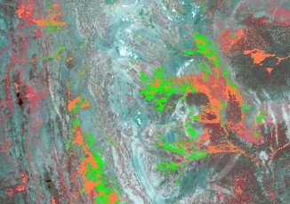
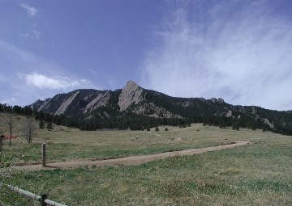
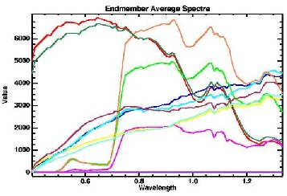
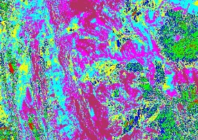

{% include google_analytics.ssi %}Mapping ponderosa and Douglas-fir using AVIRIS: an exploratory analysis in the Sierra Nevadas

AVIRIS false-color composite, 27 June 2001, near Mammoth Mountain, Sierra Nevadas, with vegetation mapping in green and orangeJohn Maurer
{% include address.ssi %}
This paper was written as part of a graduate course ("Remote Sensing Image Analysis") taught by Prof. Alexander F. H. Goetz in the Department of Geology at the University of Colorado at Boulder.
May, 2002
A study was conducted to investigate whether hyperspectral reflectance data derived from AVIRIS could be used to discriminate between different species of conifers in a mixed-conifer forest. Prior to digital image analysis, lab spectra were obtained from a number of ponderosa and Douglas-fir branches collected in the field to look for significant spectral variations. The results of these lab analyses, however, showed that there was as much variation within the two conifer species as between them, offering no spectral features to focus on in the digital image analysis. Unsupervised classification using an isodata algorithm was performed on the AVIRIS data. Linear spectral unmixing was also performed, mapping distributions of vegetation spectra using Spectral Angle Mapper (SAM) and Mixture-Tuned Matched Filtering (MTMF). Unsupervised classification as well as spectral unmixing techniques all produced two distinct classes of vegetation/conifer spectra. In all cases, one of these conifer classes had less liquid water content than the other. Field verification still needs to be performed on the study site to determine what this spectral difference might signify. One hypothesis is that the class with less liquid water content is actually a less dense forest stand, where more of the ground surface is showing through and mixing with the resultant spectra. If this hypothesis were true then such classification could be used to help identify areas of mixed-conifer forests that are especially dense and thus potential sites for hazardous wildfires.
Introduction • Imagery and Study Site • Methods • Results • Summary and Conclusions • References
Classification of tree species is important for a variety of reasons, including forest management, conservation, and scientific research. Current methods include labor-intensive field surveys or arial photointerpretation, both of which are costly and cannot cover broad regions very easily. Remote sensing has already been employed as an alternative towards this end with varying degrees of success, including multispectral and, more recently, hyperspectral data; the success has been either minimal, so far, or isolated to specific study areas and not yet generally applicable (Martin et al., 1998). The difficulty lies not only in the extreme similarity of vegetation spectra between species but also in the natural variability of spectra within a species (Cochrane, 2000; Gong et al., 1997). Small differences can be attributable to chemical make-up--chlorophyll, lignin, cellulose, and silica--as well as to physical parameters within the leaves of tree species--internal structure and arrangement of air pockets, not to mention the varying illuminating and atmospheric conditions that remote sensing systems must also deal with (Cochrane, 2000; Gong et al., 1997; Yu et al., 1999). For these reasons, the study of species identification in vegetation remote sensing is still in its infancy.
A potential application for vegetation species identification is in the identification of conifers for assessment of fire potential in mixed-conifer forests. Mixed-conifer forests generally occur at elevations from about 2,500 m to 3,000 m (~8,000-10,000 ft.). Historically these forests were predominantly composed of open stands of ponderosa pine (Pinus ponderosa) codominant with other conifer species with a variety of understory types, from grassland, to shrubs, to immature Douglas-fir (Pseudotsuga menziesii) trees and saplings (Goldblum and Veblen, 1992; Keane et al., 1990). Wildfires were natural to this environment, occurring at mean intervals of roughly 10 years, creating low-intensity surface fires that would weed out aspiring Douglas-firs and other understory vegetation and thereby maintain the open-stand structure necessary for avoiding more damaging crown fires and stand-replacing fires (Keane et al., 1990). With the advent of European settlement of the American West in the 20th century and the human-induced fire suppression that resulted, the more shade tolerant Douglas-fir has been allowed to grow to maturity in many understories and codominate with ponderosa and other conifers in mixed-conifer forests (Brown et al., 1999; Keane et al., 1990). Not only does this create denser forests and thereby greater amounts of fuel in these forests, Douglas-fir is much more fire sensitive than other conifer species and is also more susceptible to insect herbivores and harmful pathogens that can spread to other trees in the forest (Keane at al., 1990). Not only does the rise of Douglas-fir disrupt the natural pattern of mixed-conifer forests and make them less interesting for scientific studies, therefore, the increase of fire potential and increased fuels lead to wildfires in modern times that are easily started, high in intensity, unpredictable, and hard to contain from damaging areas of human settlement (Brown et al., 1999; Goldblum and Veblen, 1992; Keane et al., 1990; Veblen et al., 2000). The use of remote sensing for identifying Douglas-fir versus ponderosa in mixed-conifer forests or in just identifying areas of hazardous density is thus of interest.

Chautauqua Park, Boulder, Colorado. Photo: ©John Maurer, 2002.AVIRIS data was analyzed for a flight line covering 5.65 km by 35.1 km over Mammoth Mountain in the Inyo National Forest of the Sierra Nevadas in California, ~25 km south of Mono Lake and ~12 km east of Yosemite National Park. The region is characterized by several lakes in the Mammoth Lakes Basin, a snow-covered Mammoth Mountain (a popular area for skiing), the town of Mammoth Lakes just east of Mammoth Mountain, as well as forested and non-forested terrain. Average altitude for the AVIRIS flight line is 3061 m (10,042 ft.), putting it at the upper range characteristic of mixed-conifer forests. The major tree species of mixed-conifer forests in the Sierra Nevadas include sugar pine (Pinus lambertiana), ponderosa pine (Pinus ponderosa), white fir (Abies concolor), Douglas-fir (Pseudotsuga menziesii), incense cedar (Calocedrus decurrens) and one hardwood-California black oak (Quercus kelloggii).
The AVIRIS flight line used in this study is composed of eight scenes collected on 27 June, 2001, at 19:11:08 to 19:22:09 UTC over clear skies from an ER-2 806 aircraft. Latitude N 37.5°-38.0°, longitude W 118.9°-119.4°. Though considered "low altitude" AVIRIS data, the 9.2-m pixel size nearly approaches the 10-m pixel size of high altitude AVIRIS data, presumably caused by the tall obstacle of Mammoth Mountain.
Lab spectra were taken on branch samples from ponderosa and Douglas-fir collected along the Bluebell-Baird trail of Chautauqua Park in Boulder, Colorado. These samples were collected at this location rather than from the AVIRIS study site of Mammoth Mountain itself since time and resources did not permit the occasion for travel; the assumption was made that spectral analysis of branches from Boulder would not differ too greatly from branches at Mammoth Mountain and would, at least, provide a worthy starting point. Altitude along the Bluebell-Baird trail ranges from 1800-1830 m (~5800-6000 ft.), putting it below the normal range of mixed-conifer forests; forested areas did range, however, from solely ponderosa forest at the lower ends to mixed-conifer forest in the upper regions.
3.1. Lab Data
3.2. Image Analysis
Spectral endmember analysis of an AVIRIS scene.Ends of branches were collected from three ponderosa trees and three Douglas-fir trees with branches of the same species separated from each other by at least 100 m along the trail. Branches were primarily composed of foliage, as desired for the spectral measurements, and were collected at heights of between 1-2 m. Samples were stored in a cooler of ice for approximately one hour before spectral measurements were made in the laboratory. Spectral profiles were collected with an Analytical Spectral Devices (ASD) Spectroradiometer at the Center for the Study of Earth from Space (CSES) at the University of Colorado at Boulder. The ASD device had been warmed up two hours prior to usage. To ensure calibration accuracy and constant lighting, measurements were referenced to a Spectralon® panel before and after each branch sample. Measurements were made using bare fiber without the use of a blinder, taken at a 45° angle to mimic illumination by the sun. The only light source in the lab at the time of the measurements was the ASD lamp. To reduce noise, all spectral measurements were calculated as averages of 50 sampling periods. The ASD instrument recorded data over the range of 0.35-2.5 µm.
Five spectral profiles were collected per branch sample, giving a total of 45 profiles for each of the two species. Each spectral profile was taken with the branch rotated at a different degree on the platform, thus providing different faces of the branch to the sensor for each measurement. Spectral Profiles were saved as tab-delimited ASCII files which were then imported into Microsoft Excel for analysis. An average was taken of all 45 samples for each species, and these averages were compared using the difference of their first derivatives. A difference of first derivatives was also taken from average spectra within each species to allow an assessment of inter- vs. intra-species variation.
To allow analysis of the data from the more useful perspective of reflectance, radiance measurements from the original AVIRIS data were atmospherically corrected using HATCH (High-accuracy Atmosphere Correction for Hyperspectral data), a software package developed at CSES (not yet released). This was desirable so that endmember spectra could be analyzed for spectral features and compared with spectral profiles collected in the lab. A spectral subset of the data was then chosen to exclude bands that had been overcorrected by HATCH in the wavelengths affected by water vapor absorption and to exclude bands where AVIRIS has overlapping detectors, leaving a subset of 162 out of 224 original bands.
An unsupervised classification utilizing an isodata algorithm was first performed on the data to look for 5-10 different classes; this was performed on scene one by itself as well as scenes two and three together, resulting in seven classes in both cases.
Following this quick look at the data, linear spectral unmixing was performed on the data using the traditional "hourglass" processing flow. First, the data was put through a Minimum Noise Fraction (MNF) transformation to reduce its spectral dimensions. The MNF transform uses two cascaded Principal Components (PC) transformations: the first to equalize the noise in all of the bands, and the second to do a standard PC transform on the noise-whitened data, pushing all of the variance contained in the data into the first n bands. The resultant Eigenvalue plot of this initial MNF transform determined that the data had a dimensionality of 50--proof of a good signal-to-noise ratio in the data but a daunting number of dimensions to analyze. Though there are tools to analyze high dimensional data such as this with relative ease, I decided to reduce the dimensionality by narrowing in on a spectral region more suitable to my study: namely, the region of 0.4-1.33 µm, since the larger part of variation in live vegetation spectra can be found in this region. Any effect of lignins in the upper-2-µm region would be relatively minor in live vegetation since it is mostly masked by water in the leaf, as evidenced in my lab spectra as well. This further subsetted the AVIRIS data from 162 bands down to 83, which ended up halving the dimensionality of the data from 50 down to 25. From this dimensionality, I chose to look at only 10 dimensions to simplify the analysis even further: my reasoning being that vegetation was one of the most prevalent cover types in the image and would thus be contained in the upper range of MNF bands.
Following the MNF transform, a Pixel Purity Index (PPI) was performed to reduce the spatial dimensions of the data by finding the most spectrally pure pixels in the image. PPI achieves this using convex geometry by determining the edges of the MNF data cloud via multiple rotations of the data: 10,000 rotations in my case was more than suitable for finding all of the edges.
Following the determination of the purest pixels in the image, the n-Dimensional Visualization tool was then applied to these pixels to determine the endmembers. Auto-clustering was used on the data cloud to select and retrieve 11 endmembers, whose average spectra are shown in Figure 1. Two unique vegetation endmembers were present amongst the final 11: these are isolated in Figure 2.
With these two vegetation endmembers in hand, classification was then performed using the Spectral Angle Mapper (SAM) and Mixture-Tuned Matched Filtering (MTMF) to produce distribution maps. SAM was run with a maximum angle threshold of 0.10 radians. Scatterplots of Matched Filtering (MF) scores versus infeasibility scores were used for both vegetation classes following MTMF to create regions of interest that were not likely to include false positives, which are sometimes found when using MF alone.
4.1. Lab Data
4.2. Image Analysis
Spectral classification of an AVIRIS scene: navy blue and green are vegetation.Significant variation existed between the average ponderosa and Douglas-fir profiles, as evident in the difference of their first derivatives in Figure 3. Areas of primary variation are at the "red edge" (~0.71 µm), at the liquid water absorption feature at ~1.12 µm, and at the shoulder present at about 1.35 µm. Though this initial result was encouraging since it implied that spectral features could be used to map the two species, a look at variation within the species was sobering: differences between first derivatives of average ponderosa spectra (see Figure 4) showed even greater variation than between ponderosa and Douglas-fir, even showing variation in the absorption features of chlorophyll a and b. Differences of Douglas-fir first derivatives were likewise variable (see Figure 5). Variation seemed to occur at the same places in either comparison, as can be seen in Figure 6.
Since it has been shown that the discriminating power of visible bands is stronger than that of near-infrared bands in the classification of plant species (Gong et al., 1997), I then decided to narrow my analysis in on the 0.4-0.7 µm region. This analysis, however, had the same results as with the full spectra: variation occurred between ponderosa and Douglas-fir profiles as well as between ponderosa profiles alone and Douglas-fir profiles alone (see Figure 7). With inter-species spectral variation as significant as intra-species variation, little could be inferred from the lab profiles, unfortunately, that could be of any help in the image classification.
Promisingly, the unsupervised isodata classification itself (see Figures 8a and 8b) produced two unique vegetation endmembers, as shown in Figures 9a and 9b. These classes formed a speckled pattern that was spread diffusely across heavily forested areas in the analyzed scenes. As can be deduced from looking at the spectra of the two classes, one class has less liquid water content than the other, evident in shallower absorption features and more gradual slopes. The same held true in the analysis for scenes two and three as for scene one.
A closer look at the data in scene one using linear spectral unmixing also produced two unique vegetation endmembers, as previously shown in Figure 2. The presence of two vegetation classes in both the unsupervised classification as well as the spectral unmixing analysis is another promising result. Figures 10 and 11 show distribution maps resulting from SAM and MTMF classifications. The results of SAM and MTMF are fairly similar and the classes clearly cover areas of vegetation, as evident in the red vegetation of the CIR composite. The green class covers an area of 1.687 km2 in the SAM map and a close 1.721 km2 in the MTMF map; the orange class covers 0.352 km2 in the SAM map and a much greater 1.118 km2 in the MTMF map: perhaps a function of the maximum angle threshold applied in the SAM classification. Graphs of the average spectra for the two vegetation classes in SAM and MTMF (see Figures 12 and 13) show the same thing that was deduced from the isodata classes: one class has less liquid water content than the other. Whereas the pattern was very diffuse in the isodata map, however, the SAM and MTMF maps show more cohesiveness, with distinct regions that fall into either of the two classes and very little speckling.
Though analysis of lab spectra did not allow me to identify spectral features that could be used to distinguish between ponderosa and Douglas-fir, such a tall order could probably not be hoped for from such a small sample size (i.e. 45 samples per species). Continuum removal analysis might also provide a better means for extracting subtle details from the profiles; surely, more rigorous statistical methods could be employed in the quantification and comparison of variation in the lab spectra than visual interpretation of first derivative differences. In any case, a more useful practice than collecting lab spectra altogether would be the collection of spectra from the field, where varying illumination, atmospheric conditions, and viewing geometry can have their say on the spectra as they do in the acquisition of data from remote sensing platforms. These data, then, could form a spectral library that could be used in SAM and MTMF classifications of the image data. At the least, they would paint a more realistic picture of what a remote sensing sensor sees and would therefore make more sense to analyze in terms of seeking distinguishing spectral features. Gong (Gong et al., 1997) and others have begun studies in this vein, taking in situ spectral measurements from above forest canopies in the field arguing that the "decomposed" approach of focusing on just leaves and other components of the plant in isolation is probably not going to shed any further light on vegetation species identification in remote sensing.
Despite the lack of success in the lab spectra of this study, the separation and classification of two distinct vegetation classes in the unsupervised classification as well as in the spectral mixture analysis maps seems promising. Further, the fact that one class was always different in its amount of liquid water content is another promising continuity that suggests a pattern. What is the significance of these two classes? Different conifer species? Stressed versus non-stressed conifers? A more likely answer, perhaps, is that there is more ground surface showing through and mixing with the resultant spectra for the class which has "less liquid water content" in its spectrum; this would mean that the area was more of an open-stand area rather than a dense one since there are lots of spaces in the canopy for light to get through to the soil/ground surface. If this were true, the greater area of the green class in the SAM and MTMF distribution maps suggests a wider range of open-stand mixed-conifer forests, with fewer areas of potentially hazardous density. This is pure speculation, of course, until a field study can be carried out in the area to determine what the two mapped vegetation classes really signify.
Lastly, mapping of vegetation in the Mammoth Mountain region has the further potential application of monitoring areas for evidence of continuing C02 emissions. Already, areas just south of Mammoth Mountain around Horseshoe Lake have been closed to the public due to harmful levels of C02 emissions which are said to be the result of magmatic activity in the region: a signal that the area might be due for another volcanic eruption after 300 years of rest (Farrar et al., 1999). C02 emissions manifest themselves in patches of dying or dead trees freckled around the region. If remote sensing could be used to detect early stress in trees (procuring a simple NDVI map, for example), this could prove useful in mapping new areas of C02 emission. Perhaps the vegetation classes identified in this study could even correspond to such areas? Or maybe there were other endmembers that I ignored in reducing my dimensionality and ignoring later dimensions of the MNF Eigenvalue plot that could extract such information. Further investigation is required.
- Beaty, M.R., and Taylor, A.H. (2001), Spatial and temporal variation of fire regimes in a mixed conifer forest landscape, Southern Cascades, California, USA. Journ. of Biogeography. 28:955-966.
- Brown, P.M., Kaufmann, M.R., and Sheppard, W.D. (1999), Long-term, landscape patterns of past fire events in a montane ponderosa pine forest of central Colorado. Landscape Ecology. 14:513-532.
- Cochrane, M.A. (2000), Using vegetation reflectance variability for species level classification of hyperspectral data. Inter. Journ. of Remote Sens. 21(10): 2075-2087.
- Farrar, C.D., Neil, J.M., and Howle, J.F. (1999), Magmatic carbon dioxide emissions at Mammoth Mountain, California. USGS Water-Resources Investigations report 98-4217.
- Goetz, A.F.H. (2000), Progress in hyperspectral imaging of vegetation. Proceedings of SPIE: Critical Reviews of Optical Science and Technology CR-80--A Decade of Optics in Agriculture: 1990-2000.
- Goldblum, D. and Veblen T.T. (1992), Fire history of a ponderosa pine/Douglas fir forest in the Colorado Front Range. Phys. Geography. 13(2):133-148.
- Gong, P., Pu, R., and Yu, B. (1997), Conifer species recognition: an exploratory analysis of in situ hyperspectral data. Remote Sens. Environ. 62: 189-200.
- Keane, R.E., Arno, S.F., and Brown, J.K. (1990), Simulating cumulative fire effects in ponderosa pine/Douglas-fir forests. Ecology. 71(1):189-203.
- Lewis, M.L., Jooste, V., and de Gasparis, A.A. (2001), Discrimination of arid vegetation with Airborne Multispectral Scanner hyperspectral imagery. IEEE Trans. on Geoscience & Remote Sens. 39(7):1471-1479.
- Martin, M.E., Newman, S.D., Aber, J.D., and Congalton, R.G. (1998), Determining forest species composition using high spectral resolution remote sensing data. Remote Sens. Environ. 65:249-254.
- Richards, J. A. and Xiuping J. (1999), Remote Sensing Digital Image Analysis: An Introduction, 3rd ed., Springer, New York.
- Veblen, T.T., Kitzerberger, T., and Donnegan, J. (2000), Climatic and human influences on fire regimes in ponderosa pine forests in the Colorado Front Range. Ecological Applications. 10(4):1178-1195.
- Yu, B., Ostland, I.M., Gong, P., Pu, R. (1999), Penalized discriminant analysis of in situ hyperspectral data for conifer species recognition. IEEE Trans. on Geoscience & Remote Sens. 37(5): 2569-2577.
Top of Page • Introduction • Imagery and Study Site • Methods • Results • Summary and Conclusions • References
© 2002, {% include footer.ssi %}
{kind=link}
{kind=link}
{kind=link}
{kind=link}
{kind=link}
{kind=link}
{kind=link}
{kind=link}
{kind=link}
{kind=link}
{kind=link}
{kind=link}
{kind=link}
{kind=link}
{kind=link}
{kind=link}
{kind=link}
{kind=link}
{kind=link}